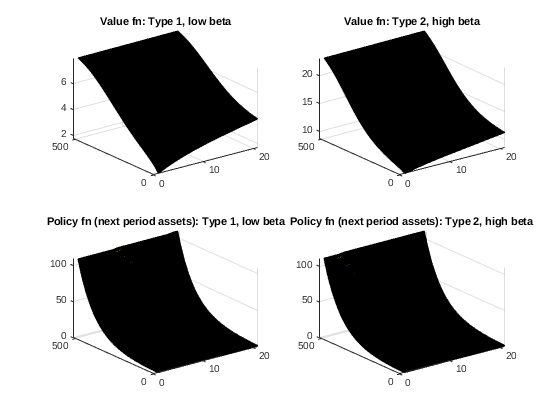

Contents
- Different permanent types of agents
- Declare the model parameters (keep them all in a structure Params)
- Set up the exogenous shock process
- Grids
- Solving the value function problem
- Solving for the stationary distribution
- Solve for the General Equilibrium
- Now that we have the GE, let's calculate a bunch of related objects
- Display some output about the solution
% Example based on Aiyagari (1994) that shows how to have two 'permanent types' of agents. % % Before looking at this you should be familiar with how to solve the model % of Aiyagari (1994). In this example I extend the model to allow for two % types of agents who have different discount factors: the parameter beta (they could in % principle differ in just about anything). % This is the second (v2) of two examples that do this. In this example the % different types of agents are set up by giving them 'names' and making the % parameter beta take different values for the different names (by making beta % what matlab calls a 'structure' instead of just a scalar number). % In the first (v1) example the exact same model was solved but instead the % different types of agents were set up as a vector for the discount factor % parameter beta. % % Essentially three changes have to be introduced to the setup: Names_i, % which gives the names of the permanent types to be used. The change to the % actual parameter values for beta. The 'weight' or 'fraction' of agents of % each type (below called PTypeWeights, and PTypeDistNames). % % A quick comment on v1 (vector) versus v2 (names) approaches. While both % can in principle do exactly the same thing, if you have lots of different % types of agents, who differ in just one or two respects (e.g., ten types or one % hundred types, but only difference is their risk aversion parameter and their % Frisch elasticity of labour supply) then you will want to use the v1 % (vector) approach. If you have just a small number of agent types, but % they are genuinely different (e.g., one is a finite lived household and % the other an infinitely lived firm, or three household types representing % single males, single females, and married couples) then you will want to % use the v2 (structure) approach. % % As will be seen, other than having to be explicit about the changes when % setting up solving a model with multiple 'permanent types' of agents using the VFI % Toolkit is no more difficult that the model with just one type. % It is worth mentioning that 'permanent types' is not the same thing as % the standard econometrics concepts of 'permanent shocks' (as in unit root % models in time series) and it is not the same thing as fixed effects in % panel data econometrics (although you might think of it as a more % sophisticated version of this; agents differ in a permanent way, but with % fixed effects that must play out exactly the same every time period, % while here 'permanent types' can play out in ways that lead to behaviour % that in reduced form will appear to change over time. % % Other than allowing for two different 'permanent types' of agents this % code does exactly the same as the standard example code for the Aiyagari % (1994) model: https://github.com/vfitoolkit/VFItoolkit-matlab-examples/tree/master/HeterogeneousAgentModels % That is, these codes set up and solve the Aiyagari (1994) model for a given % parametrization. After solving the model they then show how some of the % vfitoolkit commands to easily calculate things like the Gini coefficient % for income, and how to plot the distribution of asset holdings.
Different permanent types of agents
Names_i={'impatient', 'patient'}; % There are two permanent types of agents.
% The other thing we will need to do is specify the different values of the parameter beta below.
% Other than this the only notable changes are that this information needs
% to be passed as an additional input to a number of the VFI Toolkit commands.
% Note: You just pass Names_i as an input in exact same way you would pass
% N_i in the v1 (vector) approach to permanent types of agents. The VFI
% Toolkit automatically recognises which of the two you are using based on
% contents of N_i or Names_i.
Grid sizes, have declared at beginning for convenience.
n_k=2^9;
n_l=21;
n_r=0; % Normally you will want n_p=0, setting a non-zero value here activates the use of a grid on prices.
Declare the model parameters (keep them all in a structure Params)
% Our two permanent types of agents differ in their values of beta. In v2 % of this we set this up using a structure for beta. Nice thing is you can % just refer to agents by their names. Params.beta.impatient=0.94; % Discount factor for 'impatient' type of agent. Params.beta.patient=0.98; % Discount factor for 'patient' type of agent. Params.alpha=0.36; % Capital share in Cobb-Douglas Production function Params.delta=0.08; % Depreciation rate of capital Params.mu=3; % CRRA parameter in utility function Params.rho=0.6; % Autocorrelation of z Params.sigma=0.2; % Std dev. of shocks to z %Set initial value for interest rates (Aiyagari proves that with idiosyncratic %uncertainty, the eqm interest rate is limited above by it's steady state value %without idiosyncratic uncertainty, that is that r<r_ss). Params.r=0.02; Params.q=3; %Footnote 33 of Aiyagari(1993WP, pg 25) implicitly says that he uses q=3
Set up the exogenous shock process
Create markov process for the exogenous labour productivity, l.
[l_grid, pi_l]=TauchenMethod(0,(Params.sigma^2)*(1-Params.rho^2),Params.rho,n_l,Params.q); l_grid=exp(l_grid); % % Get some info on the markov process [Expectation_l,~,~,~]=MarkovChainMoments(l_grid,pi_l); %Since z is exogenous, this will be it's eqm value l_grid=l_grid./Expectation_l;
Grids
% In the absence of idiosyncratic risk, the steady state equilibrium is given by r_ss=1/Params.beta.patient-1; K_ss=((r_ss+Params.delta)/Params.alpha)^(1/(Params.alpha-1)); %The steady state capital in the absence of aggregate uncertainty. Params.kmax=15*K_ss; % Set grid for asset holdings k_grid=exp(linspace(0,log(Params.kmax+1),n_k))'-1; % nk1=floor(n_k/3); nk2=floor(n_k/3); nk3=n_k-nk1-nk2; % k_grid=sort([linspace(0,K_ss,nk1),linspace(K_ss+0.0001,3*K_ss,nk2),linspace(3*K_ss+0.0001,15*K_ss,nk3)]'); % Bring model into the notational conventions used by the toolkit % To simplify this example I have used the (a,z) notation of the VFI % Toolkit directly. n_d=0; d_grid=0; %There is no d variable n_a=n_k; a_grid=k_grid; n_z=n_l; z_grid=l_grid; pi_z=pi_l; n_p=n_r;
Solving the value function problem
DiscountFactorParamNames={'beta'};
ReturnFn=@(aprime_val, a_val, z_val,alpha,delta,mu,r) Aiyagari1994_ReturnFn(aprime_val, a_val, z_val,alpha,delta,mu,r);
ReturnFnParamNames={'alpha','delta','mu','r'}; %It is important that these are in same order as they appear in 'Aiyagari1994_ReturnFn'
% Following lines are used to test that we are setting things up correctly, but is not needed at this stage.
vfoptions.verbose=1;
disp('Test ValueFnIter')
tic;
[V, Policy]=ValueFnIter_PType(n_d,n_a,n_z,[],Names_i,d_grid, a_grid, z_grid, pi_z, [], [], ReturnFn, Params, DiscountFactorParamNames, ReturnFnParamNames, [], vfoptions); % The unused inputs related to the possibility that some agents are what VFI Toolkit calls 'Case2' (following nomenclature of SLP1989)
toc
% Graph the two different value functions and the two different policy functions.
% Note that these are the example/test ones, not the ones in equilibrium.
figure(1)
subplot(2,2,1); surf(V.impatient) % NOTE: notice that relative to v1, this is now 'by name' rather than the generic pt1 and pt2
title('Value fn: Type 1, low beta')
subplot(2,2,2); surf(V.patient)
title('Value fn: Type 2, high beta')
subplot(2,2,3); surf(a_grid(shiftdim(Policy.impatient,1)))
title('Policy fn (next period assets): Type 1, low beta')
subplot(2,2,4); surf(a_grid(shiftdim(Policy.patient,1)))
title('Policy fn (next period assets): Type 2, high beta')
 Solving for the stationary distribution
Params.PTypeWeights=[0.6; 0.4]; % Make 60% of agents the 'low beta' type and 40% the 'high beta' type. PTypeDistNames={'PTypeWeights'}; % Following lines are used to test that we are setting things up correctly, but is not needed at this stage. simoptions=struct(); disp('Test StationaryDist') tic; StationaryDist=StationaryDist_PType([],[],Policy,n_d,n_a,n_z,[],Names_i,d_grid, a_grid, z_grid,pi_z,[],[],Params,[],PTypeDistNames,simoptions); toc % Graph the cumulative distribution function over asset holdings. % Note that these are the example/test ones, not the ones in equilibrium. figure(2) plot(a_grid,cumsum(sum(StationaryDist.impatient,2))*StationaryDist.ptweights(1)) hold on plot(a_grid,cumsum(sum(StationaryDist.patient,2))*StationaryDist.ptweights(2)) hold off legend('Type 1: Low beta', 'Type 2: High beta') title('Agent Stationary Distribution: cdfs by type')
Solve for the General Equilibrium
% Create descriptions of aggregate values as functions of d_grid, a_grid, z_grid % (used to calculate the integral across the stationary dist fn of whatever functions you define here) FnsToEvaluateParamNames.Names={}; FnsToEvaluate_1 = @(aprime,a,z) a; %We just want the aggregate assets (which is this periods state) % Note that by default this will be evaluated for all types of agents. FnsToEvaluate={FnsToEvaluate_1}; % Following line could be used to test that we are setting things up correctly, but is not needed at this stage. AggVars=EvalFnOnAgentDist_AggVars_PType(StationaryDist, Policy,n_d,n_a,n_z,[],Names_i,d_grid, a_grid, z_grid,[], FnsToEvaluate, Params, FnsToEvaluateParamNames, [], []); %Now define the functions for the General Equilibrium conditions %Should be written as LHS of general equilibrium eqn minus RHS, so that %the closer the value given by the function is to zero, the closer %the general equilibrium condition is to holding. % Note AggVars contains the expected values over the stationary agent % distribution of the FnsToEvaluate GeneralEqmEqnsParamNames(1).Names={'alpha','delta'}; GeneralEqmEqn_1 = @(AggVars,GEprices,alpha,delta) GEprices-(alpha*(AggVars^(alpha-1))*(Expectation_l^(1-alpha))-delta); %The requirement that the interest rate corresponds to the agg capital level GeneralEqmEqns={GeneralEqmEqn_1}; %Use the toolkit to find the equilibrium price index GEPriceParamNames={'r'}; heteroagentoptions.verbose=1; disp('Calculating price vector corresponding to the stationary eqm') [p_eqm,p_eqm_index,GeneralEqmConditions]=HeteroAgentStationaryEqm_PType(n_d, n_a, n_z, [], Names_i, 0, pi_z, d_grid, a_grid, z_grid,[], [], [], ReturnFn, FnsToEvaluate, GeneralEqmEqns, Params, DiscountFactorParamNames, ReturnFnParamNames, [], [], PTypeDistNames, FnsToEvaluateParamNames, GeneralEqmEqnsParamNames, GEPriceParamNames,heteroagentoptions, simoptions, vfoptions); % The three output are the general equilibrium price, the index for the % price in the price grid (that option is unused here), and the value of % the General equilibrium conditions in equilibrium (note that they should % be zero, or in practice say of the order of 10^(-3) or 10^(-5)). p_eqm
Calculating price vector corresponding to the stationary eqm
p_eqm =
struct with fields:
r: 0.0202
Now that we have the GE, let's calculate a bunch of related objects
% Equilibrium wage Params.w=(1-Params.alpha)*((p_eqm.r+Params.delta)/Params.alpha)^(Params.alpha/(Params.alpha-1)); disp('Calculating various equilibrium objects') Params.r=p_eqm.r; [V, Policy]=ValueFnIter_PType(n_d,n_a,n_z,[],Names_i,d_grid, a_grid, z_grid, pi_z, [], [], ReturnFn, Params, DiscountFactorParamNames, ReturnFnParamNames, [], vfoptions); % The unused inputs related to the possibility that some agents are what VFI Toolkit calls 'Case2' (following nomenclature of SLP1989) % By default Policy contains the indexes corresponding to the optimal % policy. Can get the policy values using vfoptions.polindorval=1 or, % PolicyValues=PolicyInd2Val_Case1(Policy,n_d,n_a,n_z,d_grid,a_grid, Parallel); StationaryDist=StationaryDist_PType([],[],Policy,n_d,n_a,n_z,[],Names_i,d_grid, a_grid, z_grid,pi_z,[],[],Params,[],PTypeDistNames,simoptions); AggregateVars=EvalFnOnAgentDist_AggVars_PType(StationaryDist, Policy,n_d,n_a,n_z,[],Names_i,d_grid, a_grid, z_grid,[], FnsToEvaluate, Params, FnsToEvaluateParamNames, [], []); % Calculate savings rate: % We know production is Y=K^{\alpha}L^{1-\alpha}, and that L=1 % (exogeneous). Thus Y=K^{\alpha}. % In equilibrium K is constant, so aggregate savings is just depreciation, which % equals delta*K. The agg savings rate is thus delta*K/Y. % So agg savings rate is given by s=delta*K/(K^{\alpha})=delta*K^{1-\alpha} aggsavingsrate=Params.delta*AggregateVars^(1-Params.alpha); % Calculate Lorenz curves, Gini coefficients, and Pareto tail coefficients % @(d_val,aprime_val,a_val,s_val,pi_z,p_val,param) FnsToEvaluateParamNames(1).Names={'w'}; FnsToEvaluate_Earnings = @(aprime_val,a_val,z_val,w) w*z_val; FnsToEvaluateParamNames(2).Names={'w','r'}; FnsToEvaluate_Income = @(aprime_val,a_val,z_val,w,r) w*z_val+(1+r)*a_val; FnsToEvaluateParamNames(3).Names={}; FnsToEvaluate_Wealth = @(aprime_val,a_val,z_val) a_val; FnsToEvaluateIneq={FnsToEvaluate_Earnings, FnsToEvaluate_Income, FnsToEvaluate_Wealth}; LorenzCurves=EvalFnOnAgentDist_LorenzCurve_PType(StationaryDist, Policy,n_d,n_a,n_z,[],Names_i,d_grid, a_grid, z_grid,[], FnsToEvaluateIneq, Params, FnsToEvaluateParamNames); % % 3.5 The Distributions of Earnings and Wealth % % Gini for Earnings EarningsGini=Gini_from_LorenzCurve(LorenzCurves(1,:)); IncomeGini=Gini_from_LorenzCurve(LorenzCurves(2,:)); WealthGini=Gini_from_LorenzCurve(LorenzCurves(3,:)); % % Calculate inverted Pareto coeff, b, from the top income shares as b=1/[log(S1%/S0.1%)/log(10)] (formula taken from Excel download of WTID database) % % No longer used: Calculate Pareto coeff from Gini as alpha=(1+1/G)/2; ( http://en.wikipedia.org/wiki/Pareto_distribution#Lorenz_curve_and_Gini_coefficient) % % Recalculte Lorenz curves, now with 1000 points LorenzCurves=EvalFnOnAgentDist_LorenzCurve_PType(StationaryDist, Policy,n_d,n_a,n_z,[],Names_i,d_grid, a_grid, z_grid,[], FnsToEvaluateIneq, Params, FnsToEvaluateParamNames, [],[],[],1000); EarningsParetoCoeff=1/((log(LorenzCurves(1,990))/log(LorenzCurves(1,999)))/log(10)); %(1+1/EarningsGini)/2; IncomeParetoCoeff=1/((log(LorenzCurves(2,990))/log(LorenzCurves(2,999)))/log(10)); %(1+1/IncomeGini)/2; WealthParetoCoeff=1/((log(LorenzCurves(3,990))/log(LorenzCurves(3,999)))/log(10)); %(1+1/WealthGini)/2;
Calculating various equilibrium objectsDisplay some output about the solution
figure(3) plot(a_grid,cumsum(sum(StationaryDist.ptweights(1)*StationaryDist.impatient,2)+sum(StationaryDist.ptweights(2)*StationaryDist.patient,2))) %Plot the asset cdf title('Cumulative distribution of asset holdings') fprintf('For parameter values sigma=%.2f, mu=%.2f, rho=%.2f \n', [Params.sigma,Params.mu,Params.rho]) fprintf('The equilibrium value of the interest rate is r=%.4f \n', p_eqm.r*100) fprintf('The equilibrium value of the aggregate savings rate is s=%.4f \n', aggsavingsrate) %fprintf('Time required to find the eqm was %.4f seconds \n',findeqmtime)For parameter values sigma=0.20, mu=3.00, rho=0.60 The equilibrium value of the interest rate is r=2.0188 The equilibrium value of the aggregate savings rate is s=0.2915